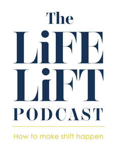

Trade Mark Journal No.2025/042 17 October 2025
UK00004275410 9 October 2025 (9,35,38,41,42)
Mark 1

Mark 2
International priority date claimed: 18 September 2025
(European Union Intellectual Property Office (EUIPO))
(019248760)
International priority date claimed: 18 September 2025
(European Union Intellectual Property Office (EUIPO))
(019248841)
- Class 9
- Media content; computer application software for streaming audio-visual media content via the internet; podcasts; downloadable podcasts; videocasts; downloadable videocasts; audio books; communication, networking and social networking software; application software for social networking services via internet; computer software platforms for social networking; digital recording media.
- Class 35
- Creating advertising material; composing advertisements for use as web pages; advertising; providing marketing information via websites; distribution of promotional material; marketing through product placement for others in virtual environments; providing online marketplaces for sellers of goods and or services; providing a searchable online advertising guide featuring the goods and services of other on-line vendors on the internet; retail services in relation to educational supplies; online retail services in relation to recorded content; online retail services relating to books; online retail services in relation to downloadable virtual works of art; online business networking services.
- Class 38
- Podcasting; streaming audio and video material on the Internet; radio broadcasting of information and other programs; broadcasting of audiovisual and multimedia content via the Internet; provision of access to content, websites and portals; providing user access to a global computer network and online sites containing information on a wide range of topics; provision of telecommunication access to video and audio content provided via an online video-on-demand service; providing online chatrooms for the transmission of messages, comments and multimedia content among users; providing chatrooms in virtual environments, providing online virtual reality-based forums for work collaboration.
- Class 41
- Education, teaching and training; entertainment services; live entertainment; creation [writing] of podcasts; creation [writing] of educational content for podcasts; production of podcasts; provision of entertainment via podcast; digital video, audio and multimedia entertainment publishing services; provision of audio and visual media via communications networks; life coaching (training); provision of training courses in personal development; writing of texts, other than publicity texts; publishing of books.
- Class 42
- Hosting of podcasts; hosting of videocasts.
HAUS of Dentistry Limited
Representative: Lincoln IP